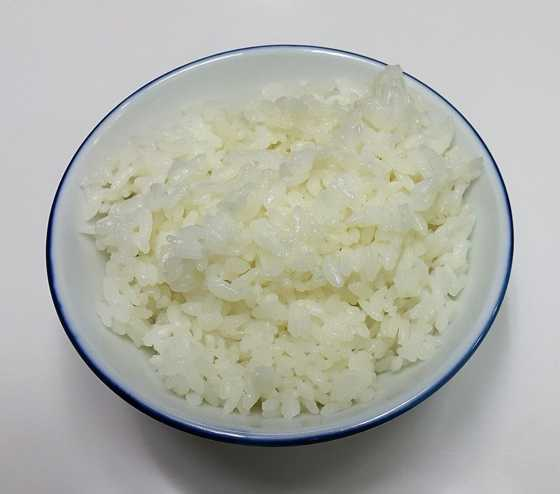
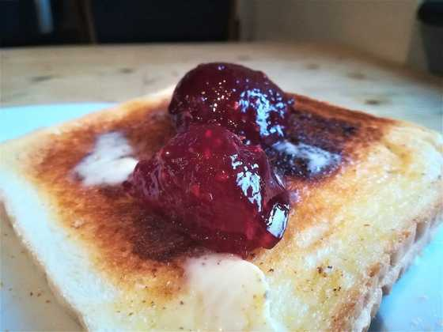
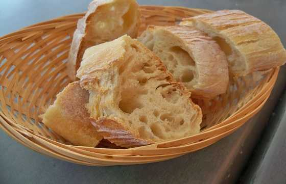
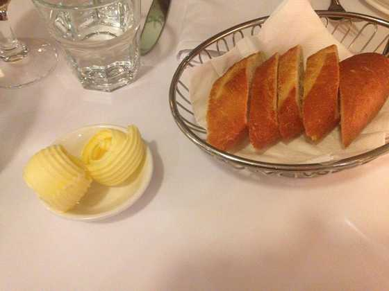
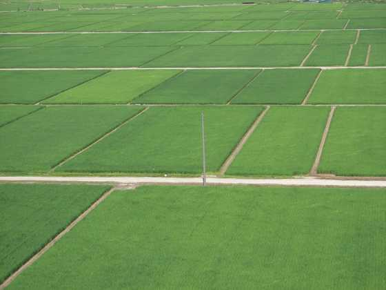

GLUTEN FREE RICE BREAD / 宮城県柴田町槻木
お米の粉から、からだにやさしい家庭のパンを。
グルテンフリーの米粉パンをお届けする、槻木駅近くの小さなパン屋です。
お店のこと
comemeぱんは、グルテンフリーの米粉パンを扱うテイクアウトのお店です。お店の告知では「地元の新鮮な食材や身体に優しい家庭的な米粉パン」を作るとされています。
- 小麦ではなく米粉のパン(グルテンフリー)
- 2025年1月オープンの予定として紹介されていました
- JR槻木駅から東へ徒歩約6分
- テイクアウト中心・駐車場は1台(掲載情報)
制作側のイメージ 店名の意味は確認できていません。「米」の字から、お米の粉でつくるやさしいパンを思い浮かべて配色と言葉を選びました。

パンのこと
商品名・価格などの詳細は準備中です。以下はパンの雰囲気を伝えるイメージ写真です。

素朴なパン
詳細は準備中

ふんわりしたパン
詳細は準備中

朝のごはんに
詳細は準備中

持ち帰りのパン
詳細は準備中

やわらかなパン
詳細は準備中
焼きたての香り
詳細は準備中

お供を添えて
詳細は準備中

じっくり焼く
詳細は準備中

切って楽しむ
詳細は準備中



口コミ
イメージ例米粉のパンは初めてでしたが、もちっとして食べやすかったです。朝ごはん用にまた買いたいです。
イメージ例駅から歩いて寄れる場所にあるのがうれしい。小麦を控えているので、選べるパン屋さんは助かります。
イメージ例家で作ったような素朴な味でほっとしました。お土産にも持っていきました。
アクセス
| 住所 | 〒989-1752 宮城県柴田郡柴田町槻木下町２丁目２−３０ レインボーテラス柴田A |
|---|---|
| 最寄り | JR槻木駅から東へ徒歩約6分 |
| 電話 | 準備中 |
| 営業時間 | 準備中(掲載情報では11:00〜16:00、水曜定休。最新はご確認ください) |
写真クレジット
- images/paddy.jpg / Echigo plain paddy fields.jpg / yamakidoms / CC BY-SA 2.0 / 新潟市北区
- images/ricebowl.jpg / A bowl of rice.jpg / Douglas Perkins / CC0 1.0 / 撮影地不明
- images/cro.jpg / Croissants au beurre (18953292873) / Herry Wibisono (herryway) / CC0 1.0 / 撮影地不明
- images/sour.jpg / Slices of sourdough bread / Angel Ganev / CC BY 2.0 / 撮影地不明
- images/bri.jpg / Brioche Nanterre / Msayago10 / CC BY-SA 4.0 / ブラジル
- images/bun.jpg / Tray of Sweet Buns / Ceeseven / CC BY-SA 4.0 / 香港
- images/bagb.jpg / Baguette and butter curls / Pru.mitchell / CC BY-SA 4.0 / オーストラリア
- images/toast.jpg / A modest breakfast at a London hotel. Toast with strawberry jam / MOs810 / CC BY-SA 4.0 / 英国
- images/roll.jpg / Dough and a rolling pin in the Franklin Farm section of Oak Hill, Fairfax County, Virginia / Famartin / CC BY-SA 4.0 / 米国
- images/bask.jpg / French bread / Marianne Casamance / CC BY-SA 4.0 / フランス
- images/bag.jpg / Baguettes - stonesoup / jules / stonesoup / CC BY 2.0 / 撮影地不明
- images/loaf.jpg / Bread (Unsplash) / Kim Cruickshanks / CC0 1.0 / 米国
- images/oven.jpg / Mixed flour bread in the oven C IMG 1676 / Anneli Salo / CC BY-SA 4.0 / フィンランド